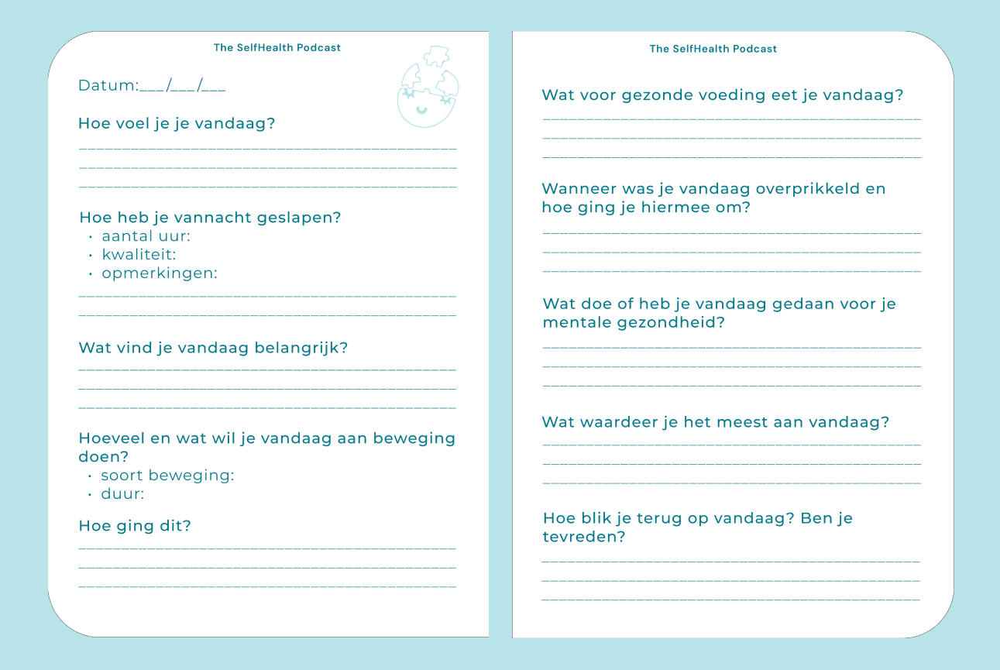

The SelfHealth Podcast
De podcast die jou zal helpen om een betere versie van jezelf te worden, mentaal en fysiek.
Naar de afleveringenBekijk de teaser
Onze producten
The SelfHealth Journal:
Deze SelfHealth gezond journal helpt je om meer inzicht te krijgen in je gezondheid, je doelen te behalen en duidelijk te krijgen wat voor jouw gezondheid specifiek belangrijk is.
Nu beschikbaar als online download
The SelfHealth Challenge
The SelfHealth Challenge is hét spel dat je helpt om dagelijks kleine stappen te zetten naar een gezonder en gelukkiger leven. Trek een kaart en ontdek eenvoudige challenges die gericht zijn op beweging, voeding, mindfulness en slaap.
Nu te bestellen
The Selfhealth Tote Bag
Deze selfhealth tote bag is de perfecte tas voor het doen van gezonde boodschapen of om je sportkleding in te doen als je bijvoorbeeld naar de sportschool gaat.
Nu te bestellen